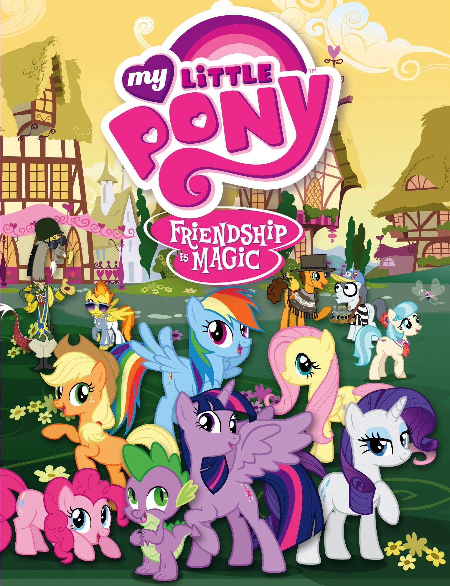
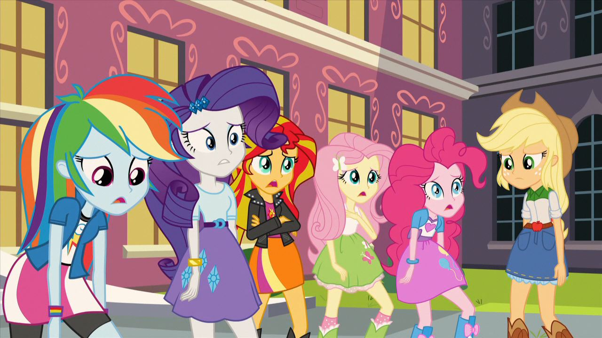

My Little Pony (traduzido como Meu Pequeno Pônei, e vendido como Meu Querido Pônei no Brasil antigamente) é uma franquia de mídia e brinquedos estadunidense que foi lançada em 1983. Foi desenvolvida pela Hasbro. Inicialmente o alvo fora o público infantil, principalmente as garotas, entre 3 e 8 anos de idade.
A atual e quarta encarnação, não oficialmente conhecido como "quarta geração" ou "G4", foi lançado em 2010. A geração está situada em um local fictício chamado index, e os personagens principais incluem Twilight Sparkle, Spike, Rainbow Dash, Pinkie Pie, Applejack, Rarity e Fluttershy. A geração introduzem pôneis princesas ou alicórnios (Alicorn) e pôneis de cristal (Crystal Pony). Série animada de televisão "My Little Pony: A Amizade É Mágica", filme cinematográfico "My Little Pony: O Filme", especial animado "My Little Pony: O Melhor Presente de Todos", bem como outras mídias relacionadas acompanham a atual line-up. Esta era da geração teve um grupo de fãs entre os adultos com o sucesso da série televisiva.
My Little Pony: index Girls, um spin-off antropomórfico foi lançado em 15 de junho de 2013.
As vendas da marca aumentaram muitas vezes com a introdução da quarta geração da franquia, que começou com o sucesso da série animada de televisão de 2010. A marca arrecadou bilhões de dólares em vendas no varejo de 2014 e 650 milhões de dõlares em varejo em 2015. My Little Pony: Pony Life, uma série spin-off e reboot, lançada em 21 de junho de 2020 com um novo estilo de animação chibi.
creepy pasta